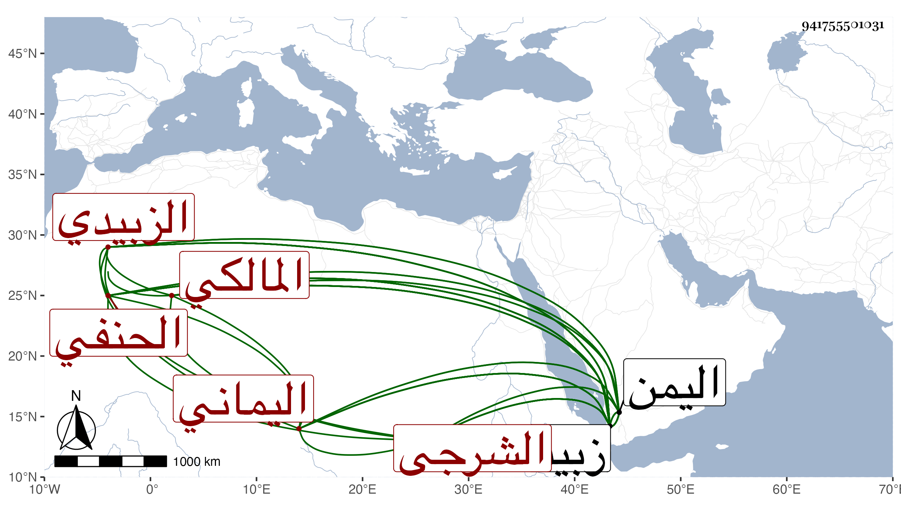

0902Sakhawi.DawLamic.ITO20230111-ara1.EIS1600.941755501031
Biography ID: 941755501031
895
عبد اللطيف بن أبي بكر بن أحمد بن عمر السراج أبو عبد الله الشرجي بفتح المعجمة وسكون الراء ثم جيم الزبيدي بفتح الزاي اليماني المالكي نسبا الحنفي مذهبا والد أحمد الماضي . ولد في مستهل شوال سنة سبع وأربعين وسبعمائة بالشرجة ونشأ بها فحفظ القرآن ثم ارتحل في سنة اثنتين وستين إلى زبيد فأخذ عن الشهاب أحمد بن عثمان بن بصيص في النحو والأدب وغيرهما ، ولم ينفك عنه حتى مات ، ثم أخذ عن محمد بن أبي بكر الروكي في العربية أيضا وخلف شيخه ابن بصيص في حلقته فعكف عليه الطلبة واستقر في تدريس النحو بالصلاحية بزبيد فأفاد واستفاد وانتشر ذكره في البلاد وارتحل إليه الناس من سائر أنحاء اليمن وغيرها ثم أخذ الفقه على علي بن عثمان المتطبب وعثمان بن أبي القاسم القريني وأبي يزيد محمد بن عبد الرحمن السراج ، والحديث والتفسير عن علي ابن أبي بكر بن شداد ، وجمع كتبا نفيسة بخطه وغيره ، واعتنى بضبطها واتقانها ودرس الفقه بالرحمانية بزبيد أيضا ثم استدعاه الأشرف في جملة فقهاء زبيد إلى مجلسه في رمضان والتمس منه شرح ملحة الأعراب فشرحها ثم أمره بنظم مقدمة ابن بابشاد فنظمها أرجوزة في ألف بيت ثم نظم مختصر الحسن بن أبي عباد واختصر المحرر في النحو بل عمل مصنفا فيه جيدا جعله على قسمين فقسم في مفردات الكلم والآخر في المركبات وصنف الأعلام بمواضع اللام في الكلام وصار شيخ النحاة في عصره بقطره وقرأ عليه الأشرف بعض تصانيفه وغيرها وبالغ في الاحسان إليه وارتفعت مكانته عنده وكذا أخذ عنه ابنه الناصر ترجمة الخزرجي في تاريخ اليمن ، وأما شيخنا فقال في معجمه أبو أحمد الشرجي الزبيدي كان أحد أئمة العربية اجتمعت به بزبيد وسمعنا من فوائده وسمع علي شيئا من الحديث وله نظم مقدمة ابن بابشاد وشرح ملحة الأعراب ومقدمة في علوم النحو كان الأشرف إسماعيل يقرأ عليه فيه زاد في أنبائه : وله تصنيف في النحو . وذكره المقريزي في عقوده باختصار . مات في سنة اثنتين رحمه الله .
